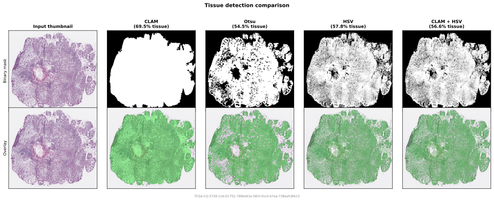

Tissue Detection
Tissue detectors run on a low-resolution thumbnail and produce a binary mask indicating tissue regions. The mask guides the sampler to only propose coordinates within tissue. This is a coarse check -- it runs once per slide.
For fine-grained per-tile quality checks on the actual extracted patch pixels, see Filters.

OtsuTissueDetector
Grayscale Otsu thresholding. Converts to grayscale, applies Gaussian blur, then uses Otsu's method to separate tissue (dark) from background (bright). Optionally applies morphological closing and removes small connected components.
This is the pipeline default (PatchPipeline uses it when no detector is specified).
from wsistream.tissue import OtsuTissueDetector
detector = OtsuTissueDetector(
blur_ksize=7, # Gaussian blur kernel size
morph_close_ksize=5, # elliptical kernel for morphological closing (0 to disable)
min_area_ratio=0.001, # remove components smaller than this fraction of total area (0 to disable)
)
Note
This is not the same as CLAM's tissue detection. CLAM thresholds the saturation channel in HSV space, not grayscale intensity. Use CLAMTissueDetector to match CLAM's behavior.
CLAMTissueDetector
Reimplements the tissue segmentation from CLAM (wsi_core/WholeSlideImage.py). Thresholds the saturation channel in HSV space, applies median blur (before thresholding), morphological closing with a square kernel, then filters contours by net area (parent area minus holes) with hole sorting and truncation.
Defaults match CLAM's create_patches_fp.py.
from wsistream.tissue import CLAMTissueDetector
detector = CLAMTissueDetector(
sthresh=8, # saturation threshold
sthresh_up=255, # upper bound for cv2.threshold
use_otsu=False, # fixed threshold (True: Otsu on saturation instead)
mthresh=7, # median blur kernel (applied to saturation before thresholding)
close=4, # square kernel for morphological closing (0 to disable)
a_t=100, # min net foreground area
a_h=16, # min hole area
max_n_holes=8, # keep N largest holes per contour
ref_patch_size=512, # reference for area scaling
)
The a_t and a_h thresholds are scaled internally by ref_patch_size^2 / (downsample_x * downsample_y), matching CLAM's behavior. The pipeline passes the downsample factor automatically.
HSVTissueDetector
Per-pixel HSV range filtering applied to the thumbnail. A pixel is classified as tissue if its hue, saturation, and value all fall within the specified ranges.
Defaults match the HSV ranges from the Midnight paper (Karasikov et al., 2025).
from wsistream.tissue import HSVTissueDetector
detector = HSVTissueDetector(
hue_range=(90, 180), # hue range (0-180 in OpenCV)
sat_range=(8, 255), # saturation range (0-255)
val_range=(103, 255), # value range (0-255)
)
Note
This applies the HSV check to the thumbnail to produce a tissue mask. Midnight applies the same HSV check per-tile on extracted patches to decide whether to accept or reject them. For that behavior, use HSVPatchFilter.
CombinedTissueDetector
Logical AND of multiple detectors. A pixel is classified as tissue only if all detectors agree.
from wsistream.tissue import CombinedTissueDetector, CLAMTissueDetector, HSVTissueDetector
detector = CombinedTissueDetector(detectors=[
CLAMTissueDetector(),
HSVTissueDetector(),
])